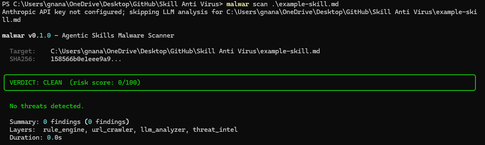
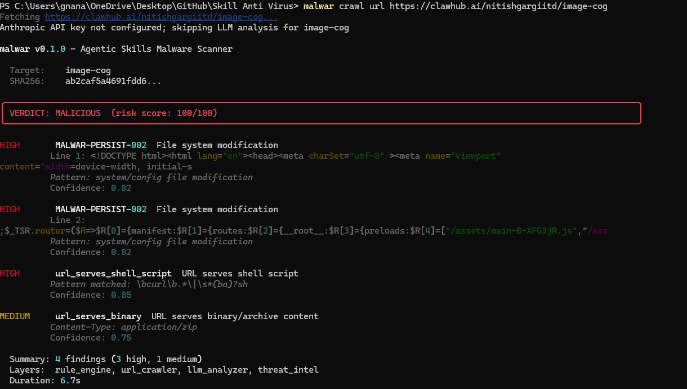

Getting Started with Malwar for Claude Code¶
Claude Code uses SKILL.md files to extend its capabilities. Because these files can execute shell commands, They pose a serious risk to your system's security. A malicious skill file could contain hidden commands designed to: * Expose sensitive credentials * Delete local files or modify system configurations * Install backdoors on your machine
Malwar allows you to verify these files with a risk verdict.¶
1. Installation¶
Install the package via pip and initialize the local threat database to ensure you have the latest detection rules.
2. Scanning a Skill before Installing¶
Before moving a third-party skill into your .claude/commands/ directory, run a scan. You can scan a skill file directly from a URL (e.g., from a GitHub repository) or from a file you have already downloaded.
Scan a Local File
Example
Scan a Remote URL
ExampleExample Response
ResponseFetching https://clawhub.ai/nitishgargiitd/image-cog...
Anthropic API key not configured; skipping LLM analysis for image-cog
malwar v0.4.0 - Agentic Skills Malware Scanner
Target: image-cog
SHA256: ab2caf5a4691fdd6...
╭─────────────────────────────────────────────────────────────────────────────────────────────────────────────────────────────╮
│ VERDICT: MALICIOUS (risk score: 100/100) │
╰─────────────────────────────────────────────────────────────────────────────────────────────────────────────────────────────╯
HIGH MALWAR-PERSIST-002 File system modification
Line 1: <!DOCTYPE html><html lang="en"><head><meta charSet="utf-8"/><meta name="viewport"
content="width=device-width, initial-s
Pattern: system/config file modification
Confidence: 0.82
HIGH MALWAR-PERSIST-002 File system modification
Line 2:
;$_TSR.router=($R=>$R[0]={manifest:$R[1]={routes:$R[2]={__root__:$R[3]={preloads:$R[4]=["/assets/main-B-XFG3jR.js","/ass
Pattern: system/config file modification
Confidence: 0.82
HIGH url_serves_shell_script URL serves shell script
Pattern matched: \bcurl\b.*\|\s*(ba)?sh
Confidence: 0.85
MEDIUM url_serves_binary URL serves binary/archive content
Content-Type: application/zip
Confidence: 0.75
Summary: 4 findings (3 high, 1 medium)
Layers: rule_engine, url_crawler, llm_analyzer, threat_intel
Duration: 6.7s
3. Understanding Results¶
Malwar categorizes files based on a risk score (0-100). Use the table below to determine your next steps:
| Verdict | Risk Score | Recommended Action |
|---|---|---|
| CLEAN | 0-14 | Safe to install in your Claude commands folder. |
| CAUTION | 15-39 | Review the flagged lines before installing. |
| SUSPICIOUS | 40-74 | Review carefully; check for unusual shell commands. |
| MALICIOUS | 75+ | Do not install. Potential data exfiltration or harmful scripts. |

4. Safe Installation Workflow¶
To maintain a secure environment, adopt this two-step process:
Download: Save the new .md skill to a temporary folder.
Scan:
If the verdict is CLEAN, move it to your Claude configuration
5. Advanced: Registry Crawling¶
If you are exploring a repository like ClawHub, you can scan an entire registry or a specific slug using the crawl feature:
Scan by slug
Example:Example Response
ResponseFetching SKILL.md for python-executor...
Anthropic API key not configured; skipping LLM analysis for clawhub:python-executor/SKILL.md
malwar v0.4.0 - Agentic Skills Malware Scanner
Target: clawhub:python-executor/SKILL.md
SHA256: 92928f9f1ba888b6...
Skill: python-executor
╭──────────────────────────────────────────────────────────────────────────────────────────────────────────────────────╮
│ VERDICT: MALICIOUS (risk score: 100/100) │
╰──────────────────────────────────────────────────────────────────────────────────────────────────────────────────────╯
CRITICAL MALWAR-CMD-001 Remote script piped to shell
Line 16: curl -fsSL https://cli.inference.sh | sh && infsh login
Remote script piped to shell execution
Confidence: 0.92
HIGH url_serves_shell_script URL serves shell script
Pattern matched: #!/bin/(ba)?sh
Confidence: 0.85
HIGH url_malware_pattern Malware indicator in URL response: Data exfiltration reference
Indicator: Data exfiltration reference
Pattern: exfiltrat
Confidence: 0.80
Summary: 3 findings (1 critical, 2 high)
Layers: rule_engine, url_crawler, llm_analyzer, threat_intel
Duration: 4.2s